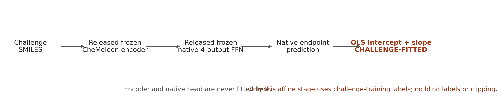
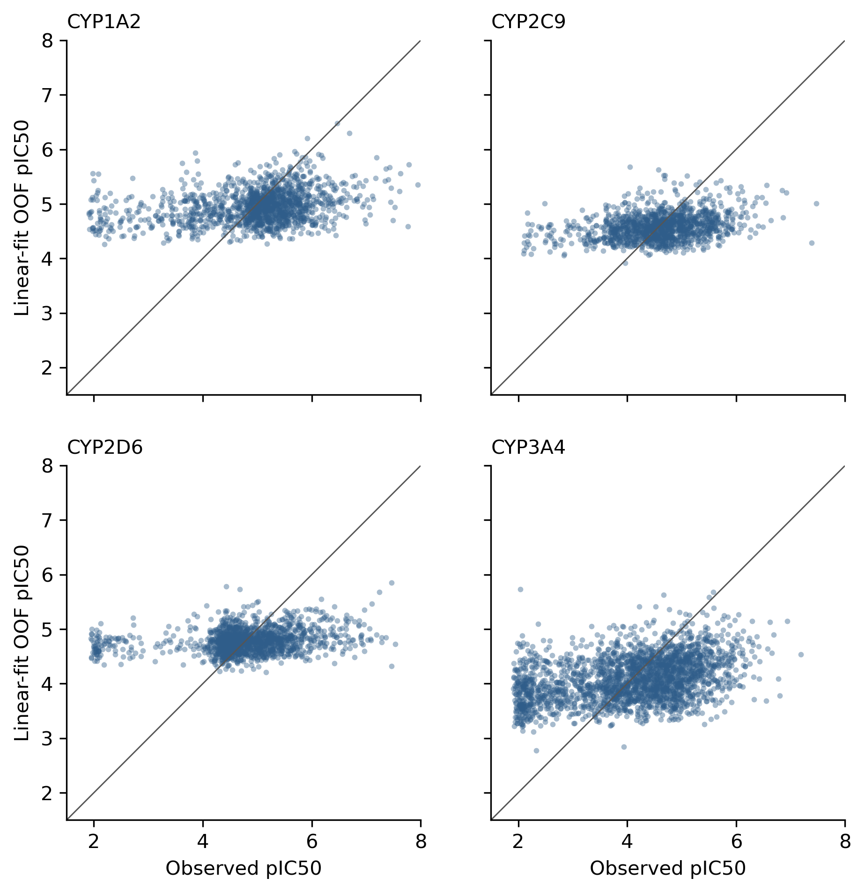

OpenADMET native-head affine calibration
Purpose: test whether one endpoint-specific ordinary affine map improves released native-head predictions under the established grouped outer folds.
Prediction construction

OOF ST-RAE
| Endpoint | Raw native | Linear fit | Δ fit−raw | Paired 95% CI |
|---|---|---|---|---|
| CYP1A2 | 0.669469545 | 0.619721829 | -0.049747716 | -0.073725568, -0.025027275 |
| CYP2C9 | 0.886225859 | 0.501177151 | -0.385048707 | -0.442084277, -0.329627972 |
| CYP2D6 | 1.021610249 | 0.644680449 | -0.376929800 | -0.432750141, -0.321856103 |
| CYP3A4 | 1.015180659 | 0.527839720 | -0.487340939 | -0.538695280, -0.435733278 |
| MA | 0.898121578 | 0.573354787 | -0.324766791 | -0.349625332, -0.297364519 |
Decision rule: MET. Support requires lower macro ST-RAE and no endpoint paired interval wholly above zero.
Training predictions versus truth

Artifacts
metrics · OOF predictions · blind predictions · coefficients · manifest · canonical record